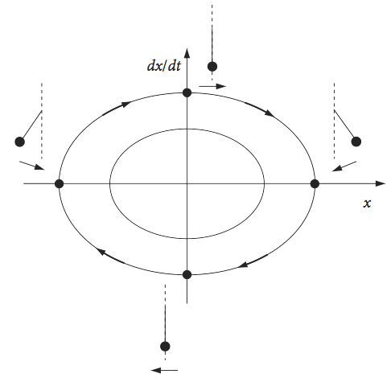

Differential Equations¶
# import all python add-ons etc that will be needed later on
%matplotlib inline
import numpy as np
import matplotlib.pyplot as plt
from sympy import *
init_printing() # allows printing of SymPy results in typeset maths format
plt.rcParams.update({'font.size': 14}) # set font size for plots
1.1 Differential equations¶
Differential equations are characterized into ordinary and partial ones. Ordinary differential equations only involve one independent variable and so have ordinary (total) derivatives; for example, the equation for a damped harmonic oscillator is
with time \(t\) as the independent variable, \(m\), \(a\), and \(b\) are constants, and \(y\) is the displacement at time \(t\). Partial differential equations, such as the diffusion equation
have two or more independent derivatives, \(t\) and \(x\).
Differential equations are solved by integration and as with any integration, constants of integration are produced. These constants determine the exact solution of a differential equation and are determined by the initial values and/or the boundary values where \(y\) is given at some \(x\) and \(t\) values. Thus it essential to determine the initial / boundary conditions when solving any differential equation. These initial and boundary conditions are determined by the physics/chemistry of the problem being studied, for example initial concentrations in a reaction or initial position of a pendulum.
There are different notations used in differential equation \(dy/dx \equiv y'\) or \(y'(x)\). The second derivative is written as \(y''\) and so on. An alternative notation is \(\dot y\) or \( \ddot y \) etc., especially if the derivative is with respect to time.
1.2 Initial Value Problems (IVP)¶
In these problems, the starting conditions only are specified. For example, with the equation \(dy/dt = ay\), the initial condition (or initial value) could be \(y(t_0)\) = 2 where \(t_0\) is the initial time, which is often zero. There is one initial condition because only a single integration step is necessary to solve the equation; the constant of integration is satisfied if \(y\) is specified at one value of \(t\). The initial value of \(y\) and \(t_0\) depends entirely on the problem being studied and is the equivalent of specifying the constant of integration in a normal integral.
If the equation is of second or higher order, two, three, or more initial conditions apply. One condition is needed for each stage of integration. Suppose the equation
has the particular solution \(\displaystyle y(t_0)= 0, \left. \frac{dy}{dt} \right\rvert_{t_0} = 1\) at \(t_0 = 0\), i.e we know from the physics/chemistry we are studying that these are the initial values. Our aim is to follow what happens at later times by solving the differential equation.
The second condition describes the gradient evaluated at time \(t_0\) and what this gradient is depends on the problem being analysed. You can appreciate these initial conditions if you play football, rugby, or golf; to get the ball to where you want it go to, the initial direction and speed (\(dy/dt\)) with which it is hit clearly matter.
The first stage of integration leaves us with one constant of integration and an equation in \(dy/dt\) and therefore \(dy/dt\) is needed at \(t_0\) to find this constant. Integrating this equation produces a second constant; hence, two initial conditions are needed. In any initial value problem once the calculation is started, there is no telling what value \(y\) will have since only the initial value has been fixed. Because many potential initial conditions could apply, all trajectories could start at \(t_0\), and have different \(y(t_0)\) and gradients or start at different \(t_0\) with the same gradient and so forth. These different starting conditions generate a field or swarm of solutions, or trajectories, Fig. 1. Solutions are sometimes represented on a graph by sets of arrows to indicate trends at different places and these are drawn as well as a particular solution.
Fig. 1 Different initial conditions lead to different trajectories from the same equation.
1.3 Boundary Value Problems (BVP)¶
The boundary value problem defines conditions at two places that have to be satisfied throughout the calculation, thereby constraining the solutions. The most familiar example is probably the Schroedinger equation describing the quantum mechanical particle in an infinitely high box. This is solved with boundary conditions that the wavefunction must always be zero at both sides of the box, because if this were not the case an infinite amount of energy would be needed. The Schroedinger equation equates the kinetic and potential energy, \(V(x)\), with the total energy but as the potential is zero inside the box only the kinetic energy remains and \(\displaystyle -\frac{\hbar ^2}{2m}\frac{d^2\psi}{dx^2} = E\psi\). The boundary conditions are \(\psi(x_0) = 0\) and \(\psi(x_L) = 0\) where \(x_0\) and \(x_L\) define the sides of the box.
2 Separable variables¶
The rate of a chemical reaction can always be written down because this is proportional to the rate of loss or gain of a molecule’s population. For example, in a first-order process \(A \to B\), such as a cis-trans isomerisation or decay of a radioactive nucleus, the rate of change of species A is proportional to the amount of A left unreacted or
where \(A_0\) is the amount initially present. The constant of proportionality \(k_1\) is the rate constant; more properly called the rate coefficient because in a chemical reaction, it depends on temperature. The negative sign is present because A decays into something else, and \([A]\) is the amount of A unreacted at time \(t\). It is important to remember that [\(A\)] is changing with time, although this is never explicitly stated in the equations; i.e. we do not normally write \([A]_t\). If the equation were written \(d[A]/dt = +k_1[A]\), with a positive sign, then it could, for instance, describe the rate of growth of the number of bacteria A in the presence of an unlimited food supply. ( Note that, as the notation \([A]\) or \([B]\) can be rather cumbersome, \(A\) and \(B\) will normally be used instead to represent concentrations.)
First-order equations are derived by considering the difference in the number of molecules \(N\) present at a time \(t\) and the number reacted during a small time interval \(\delta t\). This can be expressed as, number unreacted at time
which can be written as \(N(t + \delta t) = N(t) - k_1N(t)\delta t\) from which
and in the limit when \(\delta t\) becomes small, this equation becomes \(dN/dt = -k_1N\). This becomes equation (1) if the number of molecules is converted into a concentration and can be solved provided the amount of \([A]\) present initially is defined; the initial condition is \([A]_0 = A_0\) where \(A_0\) is a constant. Integration from \(t =0 \cdots t \) produces \(A = A_0e^{-k_1t}\) as shown below.
If the reaction scheme is more complex, A \(\to\) B \(\to\) C, then the rate of decay of A is the same as just described, but B changes also and does so as
which is the rate with which A converts to B, less the rate that B reacts to form C. To solve this scheme, the amount of \([A]\) at time \(t\) is inserted into this equation. Reactions with many steps are dealt with in a similar manner, but eventually the scheme can become so complicated that only a numerical solution to the equations is possible.
The first-order equation is found to describe many physical phenomena and is also representative of many types of equations where the variables are separable. This means that the equation can be written with \(y\) on one side and \(x\) on the other, or, for a first-order chemical reaction A on one side and \(t\) on the other. The general form of the separable equation is
which integrates to
which is the general solution since it contains an arbitrary constant \(c\). The particular solution is that obtained when either the initial or the boundary conditions are used.
In the first-order reaction of species A, the steps in the integration are
and the result should be familiar as the integration is a standard one. If the initial condition is that \([A]_0 = A_0\) at \(t = 0\) then the solution is \(\ln(A/A_0) = -k_1t\) which is usually written as \(\displaystyle A = A_0e^{-k_1t}\) and indicates more clearly how the concentration varies with time. If the initial amount is \(A_0\) at time \(t = t_0\), then the equation is \(\displaystyle A = A_0e^{-k_1(t-t_0)}\).
As species A decays it must form another B, but if this does not decay then B can be obtained from the initial conditions because the total number of molecules must be constant; therefore \(\displaystyle B = A_0(1 - e^{-k_1t})\) and B rises at the same rate as A falls. If, however, B decays to C, the scheme being A \(\to\) B \(\to\) C, then there is another rate equation \(dB/dt = k_1A - k_2B\) and we can substitute A into this to obtain
but now the terms are not separable, and another method is needed, which is described in Section 4. Sets of equations for sequential and parallel reactions such as \(dA/dt = \cdots\), and \(dB/dt = \cdots\) can alternatively be solved by eigenvalue methods described in Chapter 7 provided no terms with a product or ratio of concentrations is present, i.e. no A \(\times\) B terms, unless pseudo first-order conditions apply.
2.1 Steady State¶
In many chemical schemes, after the reaction has started it enters a period where intermediate or transient species can be identified, and their rate of change is effectively zero. This does not mean, however, that their concentration has to be small but if the rate of change is zero, then most rate equations can be solved relatively easily. This is of great utility because the complete solution can be very complex and often only numerical solutions are available.
(i) I + M reaction¶
The scheme
describes how iodine atoms are recombined to form I\(_2\) in the presence of an inert buffer gas \(M\). The transient collision complex \(IM\) can be supposed to exist at steady state once the reaction has started then,
making \(\displaystyle [IM]=\frac{k_1[I][M]}{k_{-1}+k_2[I]}\).
At steady state the rate of formation of I\(_2\) molecules is
which could be tested experimentally.
(ii) Fluorescence yield¶
The fluorescence yield of a molecule \(\varphi\) is the ratio of molecules excited to those that emit a photon and is defined as
If G is the ground state, S\(_1\) the excited singlet and T the triplet state, the scheme is
In this scheme \(k_a\) is the rate constant for absorption of a photon by the ground state, \(k_f\) the rate constant for fluorescence and \(k_s\) the intersystem crossing rate constant forming the triplet state. The S\(_1\) rate equation is
where \(k_aG\) is the rate of absorption. At steady state \(dS_1/dt = 0\), making \(\displaystyle S_1=\frac{k_aG}{k_f+k_S}\). The fluorescence yield is therefore
and is the fraction of molecules that fluoresce. A molecule fluoresces with a rate constant that is the sum of all process destroying the excited state; therefore, if \(k = k_f + k_S\) and as the fluorescence lifetime is the reciprocal of \(k\) or \(\tau = 1/k\), the yield becomes \(\varphi = k_f \tau\).
2.2 The Phase Portrait¶
The steady state is found when the gradient is zero, i.e. \(dy/dx = 0\). In non-linear differential equations which have higher powers of \(x\), such as \(dy/dx = x + ax^2 + bx^3\), there are many ‘steady states’, which are also called critical, fixed, or equilibrium points, and it is now useful to see where these are by plotting \(dy/dx\) vs. \(x\). This graph is called the phase portrait.
The new feature is that some equilibrium points are stable and others not. If an initial value of \(x\) is chosen close to a stable equilibrium point, conditions will change as \(x\) changes so that this point will be reached; if it is an unstable point, conditions now change so that this point is avoided. This may or may not mean that another stable point will be found,see Figure 2, which shows a schematic phase portrait. Some steady state points therefore can also be called equilibrium points because once the system reaches one of these it will remain there.
In Fig. 2 the arrows indicate the direction \(x\) will follow depending on its initial value; for example if 3 \(\le\) x \(\lt\) 2, then \(x\) will move towards, and end at, the stable point \(x\) = 3. The rule of thumb is that if the curve is above the \(x\)-axis the arrows move to the right, and they move to the left if the curve is below the line. A point starting in the range \(0\to 1\) or \(1\to 2\) moves to the stable point 1, and point 2 is unstable. Starting in the range \(\gt 2\), moves to stable point \(3\), but starting at zero or any negative value is unstable. A negative value of \(d^2y/dx^2\) at a steady state point also indicates stability.
Fig. 2 The stable ( filled circles ) and unstable equilibrium points in a schematic of a phase portrait.
If a problem is described by two coupled non-linear differential equations \(dy/dx = f (x,y)\) and \(dz/dx = g(x,y)\) then the phase portrait is not usually plotted but instead the phase plane in which is \(y\) vs \(z\) is plotted. Chapter 11 gives examples of using the phase plane. Strogatz (1994) discusses phase portraits and phase planes in detail and illustrates these with many interesting examples.
3 Phase planes and solving equations by separating variables¶
(i) Laser Gain¶
A laser has two basic forms, an amplifier and an oscillator. A laser amplifier is usually a single or double pass device in which an input laser is amplified by spontaneous emission in the gain material in which there is a population inversion. If the gain material contains atoms, ions, or molecules this inversion contains many more excited states than ground states and an incoming photon of the correct energy will stimulate an excited state to enter a lower state by releasing its energy as a new photon. The population of this lower state has to be kept close to zero if the laser is to work well, because the transition rate is proportional to the population difference. The initial inversion is produced by an external source, for example, by using another laser, flash lamps, or an electric current.
In a laser oscillator, the gain material is placed between mirrors so that feedback of photons between these is possible. The lasing builds up to a steady state because a little of the spontaneous emission from the population inversion is captured by the mirrors and repeatedly passes back and forth through the gain material causing each photon to stimulate another every time it does so. The process is therefore non-linear. If you have tried to align a laser, you will have noticed that as soon as the alignment is correct, and the losses are therefore drastically reduced, the laser instantly lights up. A steady state is reached because there are losses in the cavity as well as gain and these balance one another.
Fig 3 Gain threshold and stability in a basic model of a laser when \(a \gt\) 0. \(n\) is the number of photons.
A basic model of a laser measures the rate of change of the number of photons \(dn/dt\) as the difference between the number due to gain and loss and, clearly, if the laser is to work the gain must initially exceed the loss. The threshold to lasing occurs when gain equals loss, (see Haken 1978, p. 127; and Svelto 1982). The increase or gain in the number of photons is due to stimulated emission. The losses are caused by reflections from surfaces in the laser cavity, such as those on the laser rod or the quartz of a dye cell, and from transmission through the output-coupling mirror. Some gain materials also absorb at the same wavelength as the laser operates, and this is a cause of loss. The gain minus loss in the number of photons is therefore
where \(g\) represents the gain coefficient, \(N\) the number of excited states in the gain medium, which assumes that the lower state has zero population. The rate constant for decay of photons out of the cavity \(k\) accounts for all the losses. This equation is non-linear although it appears not to be. The non-linearity is introduced because the number of excited states \(N\) is not expected to be constant since photons are stimulated out of it. Suppose, therefore, that by continuous external excitation, the number of excited states is kept constant at \(N_0\), then \(N = N_0 - \gamma n\) where \(\gamma\) is a constant. The rate equation now becomes non-linear; \(dn/dt = g(N_0 - \gamma n)n - kn\) which can be rewritten as
with the constant \(a = gN_0 -k \) and \(b =g\gamma\). If the excitation producing the excited states is weak, then \(a\) is negative and the number of photons does not increase. The lasing threshold condition occurs when \(a = 0\) giving the minimum \(N_0\) as \(k/g\). Thus, if the laser gain coefficient \(g\) is high, the lasing threshold is small. If the rate of loss of photons in the cavity \(k\) is small, which corresponds to a long cavity lifetime, the threshold is also small. If excitation is strong, making \(N_0\) large, then \(a\) is positive and the laser operates.
The phase portrait \(dn/dt\) vs. \(n\) is now an inverted curve as \(a \gt 0\) and has steady states at \(n_{ss} = 0\) and at \(n_{ss} = \alpha/\beta\). Since the rate of change of the number of photons has to be positive for the laser to work, the gradient at threshold must be negative; see Fig. 3. The second derivative at threshold is \(-a\), which is negative, and confirms the stability as \(a\) is positive. The presence of the steady state means that the laser intensity will rise to a constant value, given by the pump intensity. When this is achieved, the gain must balance the loss because the rate of change of the number of photons is zero. Note that loss includes the number of photons that form the laser beam itself.
The rate equation is solvable by separating variables and integrating;
The integral can be separated into simpler terms using partial fractions, Chapter 4.2.13, or SymPy used. The result is
Hence
where \(c\) is determined by the initial conditions. This function is plotted in fig 4 and the solution obtained using SymPy is also given.
Fig. 4 Relative population \(n(t)/n_0\) vs. at for a laser with \(a/(bn_0) = 2\) and \(1/2\).
The calculation is given below
# laser gain
a, b, t, n0 ,C1 = symbols('a, b, t, n0, C1', positive = True)
n = Function('n')(t)
f01 = diff( n,t) -a*n + b*n**2
print('equation is ')
f01
equation is
ans = dsolve(f01,n)
ans
Solving for \(e^{aC_1}\) with the initial conditions \(n(0)= n_0 ; t=0\) produces
If \(n(t)\) is plotted vs time, the curve rises or falls to reach a steady state number of photons, \(n_{ss} = a/b\). This is reached because the exponential terms tend to zero as \(t\) increases. This steady state can be greater or smaller than \(n_0\) because \(n_{ss} = (gn_0 - k)/g\gamma\) and when the gain \(g\) is large and \(k\) the rate of loss of photons is small, then \(n_{ss} \gt n_0\) and the number of photons increases from \(n_0\) to the steady state value. The threshold condition is \(k/g\) and this needs to be small for lasing to occur. The expression for the steady state also shows that the number of photons increases linearly with pump power, which is proportional to \(n_0\). Thus, by examining the phase portrait, the same conclusions are arrived at as by solving the equations and then looking for the long time limit.
The growth or decrease in relative population \(n(t)/n_0\) is shown in Fig. 4 plotted vs. reduced time \(\tau= at\) and with dimensionless parameter \(a' = a/(bn_0)\). Making these changes reduced the equation to a simpler form;
The form of the rate equations describing the laser is mathematically the same as those for an autocatalytic reaction; this is not so very surprising because in a laser one photon stimulates another. In an autocatalytic reaction, one molecule produces a copy of itself: A + B \(\to\) P + 2B. An autocatalytic reaction is described in question Q18.
(ii) Harmonic oscillator¶
Simple harmonic motion is described by the generic equation \(\displaystyle \frac{d^2x}{dt^2}+\omega^2x=0\),
where \(\omega\) is the oscillator frequency, \(x\) position, and \(t\) time. As the phase portrait is a plot of \(dx/dt\) vs \(x\), the equation has to be integrated once to get it into this form. This can be done by defining \(v = dx/dt\), then
Next using the chain rule \(\displaystyle \frac{dv}{dt}=\frac{dv}{dx}\frac{dx}{dt}=v\frac{dv}{dx}\) and the equation becomes,
Integrating by separating variables gives \(\displaystyle v^2 +ω^2x^2 = c\) where \(c\) is a constant. The trajectories in the phase plane are ellipses whose exact values are determined by their initial conditions. However, all of the trajectories take the same time to complete, as only one frequency is associated with the oscillator.
The origin of the phase portrait is a position of stable equilibrium, and corresponds to the oscillator being stationary. If a pendulum is observed, with \(x\) as the initially positive angle and with an initial velocity of zero, then the starting point is on the positive x-axis. The phase plane is followed clockwise, as the pendulum increases in (negative) angular velocity to the left and the angle decreases towards zero, at which point the pendulum is vertically downwards and the angular velocity has its maximum negative value. The pendulum continues to move until the velocity is again zero at the opposite angle to the starting point. It now changes direction, the velocity reversing (becoming positive), and returns to the starting point, travelling over the top of the phase plane.

Fig. 5 Phase portrait for the simple harmonic oscillator. The position of a pendulum at various points is shown. Motion to the left is a negative velocity.
As the velocity has been calculated if this is integrated the time to move from one position to another can be now be found using
and then
where \(c\) is proportional to the energy. Integrating produces
Suppose that the oscillator is a diatomic molecule with frequency \(\omega\) (in radians/s) where \(\omega =\sqrt{k/\mu}\), with \(k\) as the force constant and \(\mu\) the reduced mass. The energy is \(E_n=\omega(n+1/2) \) with quantum number \(n=0,1,2\cdots\). Substituting the energy for \(c\) gives
and to find the period of oscillation the end points of the oscillation must be found. These occur when the bond is most compressed and when most stretched and at these points the velocity is zero, hence at these points \(c = ω^2x^2 = \omega(n+1/2) \) which gives the connection between bond extension \(x\) and \(n\) quantum number.
Substituting for both limits with \(x=\pm\sqrt{(n+1/2)/\omega}\) and multiplying by two to make a round trip gives the round trip time as
which shows that the period \(t\) is independent of the quantum number, just as expected for the harmonic oscillator.
(iii) The Morse anharmonic oscillator¶
The Morse potential is often used as a model of a diatomic molecule as an anharmonic oscillator because not only does the potential allows the molecule to dissociate at high energy, unlike the harmonic oscillator so is inherently more realistic but also the Schroedinger can be solved analytically with this potential. The energy (eigenvalues) are
where \(\omega_e=\sqrt{k/\mu}\) is the fundamental oscillator frequency and \(x_e\) the (dimensionless) anharmonicity. If the bond extension about the equilibrium point ( the bottom of the potential well, \(r_e\) ) is \(q = r-r_e\) and the dissociation energy \(D_e\) the potential has the form
where \(a=\sqrt{k/2D_e}\) and has dimensions of 1/length. The force constant is \(k\) and is that value that would pertain just at the minimum of the potential well where the motion is effectively harmonic. Figure 5a shows the potential and some energy levels. That the energy levels become closer together as the bond stretches can be understood by recalling that the same effect occurs in a ‘particle in a box’ as the box is made larger and is a general effect in quantum systems.
Figure 5a. Example of a Morse potential with several energy levels. Parameters used are not from any particular molecule and are \(D_e = 1,\; a=1,\; \mu = 30\).
Following the example of the harmonic oscillator (ii) and assuming the motion to be classical the equation of motion becomes
which can be integrated by separating variables to find the velocity
and from this equation the velocity vs. position can be plotted for different values of the constant \(c\). Below the dissociation limit \(D_e\) these values are given by \(E_n\) for quantum number \(n\) and some values of the momentum \(p=\mu v\) vs. position \(q\) are shown in figure 5b. The dot at (0,0) shows the minimum of the well and two quantum numbers \(n = 0,6\) are labelled. When the energy is below \(D_e\) the motion is periodic, i.e. the molecule is vibrating. At \(q = 0\) molecule is at the middle of the potential well and its momentum (or velocity) is at a maximum, whereas at \(p = 0\) the molecule is at the inner or outer turning point and is instantaneously stationary. Above \(D_e\) the motion is no longer periodic, i.e the molecule is dissociating and a set of equally spaced values of \(c\) are shown.
Figure 5b. Momentum vs. position for the Morse potential. The coloured lines are below the dissociation energy, the blue one at energy \(D_e\) (the separatrix ) and the grey ones above this energy.
When there are very many levels in the potential, such as when \(m\) is large then it is possible to excite the molecule to very close to the dissociation limit. In this case molecules can have a huge size, many hundreds of nanometres if not larger. These can be called ‘Rydberg’ molecules.
Hamilton’s Equations of Motion¶
The calculation of the period as was done with the harmonic oscillator is, in principle, just the same: the equation for the velocity is integrated by separating variables. However, in this case a very hard integral is produced and another and far more powerful approach can be used. Thus uses Hamilton’s formulation of mechanics and is in itself a very powerful method but is huge topic in itself and so only an brief example will be given here.
The basis of the method we use is based on two equations connecting the total energy (in this example) with momentum and position. The total energy is called the Hamiltonian, \(H\) and position and momentum are conventionally labelled \(q,\;p\) respectively.
Hamilton’s ‘canonical’ equations of motion are;
where \(\displaystyle \dot q \equiv \frac{dq}{dt}\) and similarly for \(\dot p\)
The total energy of the oscillator is the sum of the kinetic and potential parts, thus with mass \(m\) and kinetic energy \(p^2/2m\)
Using this equation it is clear that a contour plot of \(p\) vs \(q\) can be immediately produced, where the values of the contour can, for example, be chosen to be the energy of the quantum oscillator e.g. \(E_n=\omega_e(n+1/2)-x_e\omega_e(n+1/2)^2\) which is only valid up to the dissociation energy.
The period of the motion at each energy \(E_n\) can be found by integrating \(dq/dt\) and this equation is
which means finding an equation for the momentum. However, we already have this as it is the Hamiltonian, all that is needed is to equate it with an energy and we can choose \(E_n\). Thus
and rearranging
integrating between positions \(q_1,q_2\) gives
The integral is easier using the substitution \(u=e^{-ax}\) which produces
When expanded the left-hand side has the standard form
with \(a\to -D, b\to 2D,c\to E_n-D\) giving
The limits, which are the turning points have to be found. As these occur when the momentum is zero (bond fully stretched or compressed) these are found when \(\displaystyle E_n=D(1-e^{-aq})^2 \) which produce limits in terms of parameter \(u\) of \(\displaystyle u_{a,b}=1\pm\sqrt{\frac{E_n}{D}}\). The conversion \(\tanh^{-1}(x)=-i\tan^{-1}(ix)\) is also needed.
The term \(\sqrt{E_n -D_e(1-u)^2 }\) in the denominator becomes zero with these limits, making \(\tan^{-1}(\infty)=\pi/2\), and the solution is greatly simplified yielding a period of
As a check work out the dimension of this result; \(a\) has dimensions of m\(^{-1}\), \(D\) of energy (kg (m/s)\(^2\)), thus \(t\) has units of time. As expected for an anharmonic oscillator, the period become bigger as the energy increases. The excursion the atoms make is also increased as may be seem in figure 5b. When \(E_n=D\) the period is infinity as here the molecule has dissociated. This trajectory is the blue line in fig 5b and is called a separatrix or the homoclinic orbit .
Figure 5c. The period of an anharmonic oscillator vs energy. The parameters are as used in figure 5b. The dissociation energy \(D=1\). The circles show the energy \(E_n\) for \(n=0\cdots 9\) the only bound energy levels in this particular potential.
3.1 Chemical Kinetics¶
Here we describe a few examples of chemical kinetics including those reaching equilibrium, reaction with flow, and reaction and diffusion. In sections 9.2.iv,v and vi of this chapter and Chapter 11.4.10, 11.7 and 11.8 (Numerical methods) examples of more complex reactions with diffusion or multiple steps, which can generally only be solved numerically are examined.
(i) Bimolecular reactions¶
In a bimolecular reaction, such as A + B \(\rightarrow\) C, the rate of reaction of A would normally be written as
and as it is written it is of little help in solving the equation. If the initial amounts of A and B are \([A]_0 = a_0\), \([B]_0 = b_0\), and if \(x\) moles have reacted at time \(t\), then the amount of A at any time is \(a_0-x\) and the rate equation can be solved as
The variables are separable, and to integrate the right-hand side this can be split into partial fractions,
integrating and combining terms produces
and the constant \(c\) can be evaluated because \(x = 0\) at \(t = 0\), therefore
which can easily be solved for \(x\), the amount reacted, at time \(t\) by first exponentiating.
In the case when \(2\mathrm{A}\rightarrow \mathrm{B + C}\) the rate equation is
Integrating with \(a=[A],\; a_0=[A]_0\) at \(t=0\) and \(b_0=[B]_0\),
and so the product follows
and sometimes the factor of \(2\) is incorporated into the rate constant.
The calculation can also be done by letting \(x\) be the amount that reacts, i.e. amount of product formed, then
Integrating gives \(\displaystyle \frac{x}{(a_0-x)}=2a_0k_2t\) which on extracting \(x\) gives the equation above for \(B\).
(iii) Reversible or opposing reactions \(A \overset{k_1}{\underset{k_2} \rightleftharpoons }B+C\)¶
Suppose that the reaction \(A \overset{k_1}{\underset{k_2} \rightleftharpoons }B+C\) reaches equilibrium there being an amount \(\mathrm{[A]_0}\) initially and \(\mathrm{[B]_0=[C]_0=0}\). The simplest way to integrate the equation is to let an amount \(x\) react then
The equation is \(\displaystyle \frac{da}{dt}=-k_1a+k_2ab\),
substituting for \(x\), the amount reacted at time \(t\), gives
This equation has a standard form
where \(\alpha = -k_2,\; b=-k_1,\; c=k_1a_0\) and the condition is that \(k_1^2 \gt -4k_2k_1a_0\) which is true. Substituting produces \(\sqrt{b^2-4\alpha c} = \sqrt{k_1^2+4k_2k_1a_0}\) and also evaluating the constant, gives
and from this we can see that the reaction comes to equilibrium with a first order rate constant of \(\sqrt{k_1^2+4k_2k_1a_0}\). The inverse of this value is sometimes called the relaxation time.
This form of the equation is clearly rather messy. It is simplified if the equilibrium amounts are incorporated. At equilibrium the rate of change of A becomes zero and so \(k_1(a_0-x_e)=k_2x_e^2\) where \(x_e\) is the equilibrium amount and so \(k_2= k_1(a_0-x_e)/x_e^2\). The equilibrium constant is by definition \(K_e=k_1/k_2\). Substituting for \(k_2\) and after a great deal of simplifying the result is
and as \(x,x_e,a_0\) are all concentrations this is dimensionally correct.
(iv) Temperature Jump; a perturbation from the equilibrium \(\mathrm{H_2O}\overset{k_1}{\underset{k_2} \rightleftharpoons }\mathrm{H^+}+\mathrm{OH^-} \)¶
Once a reaction has come to equilibrium, such as \(\mathrm{H_2O}\overset{k_1}{\underset{k_2} \rightleftharpoons }\mathrm{H^+}+\mathrm{OH^-} \), a small perturbation can be used to measure the return to equilibrium which may take only a few microseconds and by so doing the individual rate constants can be obtained. The change in absorption can be measured as equilibrium is reestablished. Often the perturbation is in the form of rapid heating of the solvent by a degrees or so. In the past heating by passing an electric current was used but today this can be effected most easily by using a nanosecond duration laser tuned, for example, to water’s absorption in the infra red. An alternative is to add a dye with a low fluorescence yield to the solution, and use this to absorb visible light and so heat the solution as its excited state decays. Many enzyme’s equilibria have been studied using T-jump.
Consider the general equilibrium \(A = B + C\) and let \(a_e, b_e, c_e\) be the equilibrium amounts of A, B and C respectively. An amount \(x\) is transferred to products as a result of heating the solution and the concentration of \(a\) is \(a=a_0-x\). In water \(x\) is the concentration of ions. The rate equation is then
and at equilibrium \(k_1(a_0-x_e)=k_2x_e^2 \) where \(x_e\) is the equilibrium amount of A. A change in amount \(x\) due to the temperature jump is \(\Delta x=x-x_e\) and substituting for this gives
and as the change is small the term in \(\Delta x^2\) is very small compared to the others and may be ignored giving,
which can be simplified using the equilibrium condition \(k_1(a_0-x_e)=k_2x_e^2 \) to
which on integrating gives \(\displaystyle \Delta x=e^{-(k_1+2k_2x_e)t} + const\), when \(t=0, \Delta x=\Delta x_0\) so that
which has a relaxation time of \(1/(k_1+2k_2x_e)\). If the equilibrium constant is also known then both rate constants can be evaluated because \(K_e=k_1/k_2\).
In water at pH = \(7\) and \(298\) K the relaxation time is measured to be 37 microseconds. The equilibrium constant is
where pure water is \(55.55\) molar. In using the equilibrium constant it is understood that each concentration is divided by 1 molar so that it is dimensionless. At this temperature \(K_w = 10^{-14}\), thus \(x_e=10^{-7}\) and in the denominator can be ignored giving \(K_e=1.80\cdot 10^{-16}\).
The equation is \(\displaystyle \frac{1}{37\cdot 10^{-6}}= k_2(K_e+2x_e)= k_2(1.80\cdot10^{-16}+2\cdot 10^{-7})\) giving \(k_2=1.35\cdot 10^{11} \mathrm{dm^3\;mol^{-1}\;s^{-1}}\), and therefore, \(k_1=2.43\cdot 10^{-5}\mathrm{s^{-1}}\).
The large value for \(k_2\) suggests that it is diffusion controlled. This may be estimated using the Stokes-Einstein equation
which gives a value of \(6.6\cdot 10^9 \;\mathrm{ dm^3\,mol^{-1}\,s^{-1}}\) in water with a viscosity \(\eta=0.001\) Pa S. This is clearly way-off the measured value, but the formula was derived for neutral species and therefore ignores the fact that ions are involved which in this case are attracted to one another. Adding a correction (Wilkinson, 1980) increases \(k_2\) by a factor of around twenty (depending on ion separation) bringing the value towards \(10^{11}\) much closer to the experimental measurement.
(v) Reversible reactions \(A + B \overset{k_1}{\underset{k_2} \rightleftharpoons } C + D\)¶
The gaseous decomposition of HCl follows follows the stoichiometry \(\mathrm{2HCl \rightleftharpoons H_2 + Cl_2}\) although the reaction is more complex involving radicals. This is a particular case of a reversible reaction \(A+B=C+D\). The scheme general is, using the same notation as above,
and again the integral
has the standard form of eqn 5a with \(\alpha = k_1-k_2,\; b= -2a_0k_1x,\; c=k_1a_0^2\)
which shows that equilibrium is reached with a rate first order constant \(2a_0\sqrt{k_1k_2}\) because \(k_1,k_2\) are both second order rate constants.
Again, using the equilibrium condition, which in this case is
the equation can be simplified to
Returning to \(\mathrm{2HCl \rightleftharpoons H_2 + Cl_2}\) this case can be converted into \(2A\rightleftharpoons C+D\) quite simply by noticing the form of the rate equation where now \(k_2'\) is the back reaction rate constant
is very similar to that of A+B=C+D and the equations become the same if we make \(k_2'/4=k_2\).
(vi) Hydrogen iodide equilibrium¶
One of the first reaction to be studied in the late 1800’s was the dissociation of hygrogen iodide vapour at high temperatures \(\approx 450\) K. It is interesting to derive the kinetic equations for \(\mathrm{2HI \rightleftharpoons H_2 + I_2}\) from scratch.
The rate equations are
Suppose that initially only hydrogen and iodine are present in amounts \([H_2]_0, [I_2]_0\) then
thus by substituting so that the expression is only in HI, the other concentrations being constant,
If initially only HI is present then \( [HI]_0-[HI]=2[H_2]=2[I_2]\) then similarly calculating
which leads to the same rate equation when the numbers of H and I atoms are equal, i.e. \([H_2]_0=[I_2]_0\) and \([H_2]_0+[I_2]_0=[HI]_0\) and so the same equilibrium is reached whether the reaction stats as pure HI or as hydrogen and iodine.
At equilibrium the forwards and backwards rates are equal and then the equilibrium condition is
and solving for the equilibrium constant \(K_e=k_1/k_2\) gives
To solve eqn 5f a change in notation clarifies the equation, let \(a=[HI]_0,\; x=[HI]/[HI]_0\) and then the solution is the integral,
which has a similar solution to those given above but is more compact if expressed in terms of \(\tanh^{-1}\) solution where \(\displaystyle 2\tanh^{-1}x =\ln(1+x)-\ln(1-x)\). The solution is
Using the identity \(\displaystyle\tanh^{-1}(u)\pm \tanh^{-1}(v) = \tanh^{-1} \left( \frac{u\pm v}{1\pm uv}\right) \) and isolating \(x\) gives
and starting with iodine and hydrogen only and integrating from \(1\to x\), gives
The approach to equilibrium both starting with HI and with Hydrogen and iodine is shown in figure 5d. The data was recorded in 1899 by Bodenstein and are replotted below. The temperature was \(448^\text{o}\) C. The lines are fitted from the integrated equations. The quantity labelled as \(x=[HI]/[HI]_0\)
Figure 5d. \(\mathrm{2HI \rightleftharpoons H_2 + I_2}\) reaching equilibrium starting at zero HI, rising points, and eqn 5g, and only HI, falling points, and eqn 5h. The equilibrium value \(x_e=0.786\) at \(448^\text{o}\) C. The curves show that the same equilibrium is reached starting either with products or reactants.
(vii) Kinetics and flow¶
Water entering and leaving a tank, reaction vessel, or even a lake can be modelled by calculating the difference in the amount material flowing in and out, viz.,
in an analogous way to a chemical reaction. Terms for chemical reactions can be added if needed. It has to be assumed not only that the rate of inflow is the same as outflow, otherwise the lake will fill or empty, but also that material entering is fully mixed before it leaves (a well-stirred reactor), otherwise a concentration gradient would exist and this will complicate the calculation. If the concentration is \(x_0\) before any flow starts, the material entering has a constant concentration \(x_{in}\), the in-flow rate is \(f \,\mathrm{dm^3\,s^{-1}}\), the volume of the lake is \(V\) and if \(x\) is the concentration (mole dm\(^{-3}\)) of the tank/lake at any time \(t\) then,
and notice that \(f/V\) has dimensions of a first-order rate constant or s\(^{-1}\). Solving this initial value problem by separating variables gives
which has the solution
as \(x=x_0\) at \(t = 0\) then
Working in reduced values makes it simpler to determine the range of behaviour of the results, see Fig. 6. If the initial concentration \(x_0 \ne 0\) the reduced equation can be written as
where \(r = x/x_0, \,r_{in} = x_{in}/x_0\) and \(\tau=ft/V\) so that now only the ratios need be considered.
If \(r_{in} \gt 1\), the concentration ratio increases with time and the lake becomes polluted. At values of \(r_{in} \lt 1\), which means that \(x_0 \gt x_{in}\), the lake becomes more dilute and if pure water is added, \(r_{in} = 0\), the polluted lake would be cleaned after a time larger than approximately \(t = 5V/f\).
If the initial amount could be zero, i.e. the lake is clean but becomes polluted then we can write \(r=x/x_{in},\; r_0=x_0/x_{in}\) and then
which always reaches a constant value of \(1\) but with initial value depending on \(r_0\).
Barnes & Fulford (2002) discuss several similar models.
Fig. 6. Left. The change in the ratio \(x/x_0\) vs. reduced flow \(ft/V\) for different \(r_{in} = x_{in} /x_0\) ratios, showing the range of curves obtainable with different starting conditions. Right. The same equation but rewritten with ratio \(r_0=x_0/x_{in}\). The ratios in both plots are \(0, 0.5, 1\) and \(1.5\).
(viii) Dissolution kinetics¶
When a solid solute is dissolved in a solvent, the rate equation is found by considering the change in the amount dissolved in solution during a short time period. In dissolving a solid, a saturated solution will eventually be formed and this limits how much solid will dissolve. If \(x_0\) is the initial amount of solid to be dissolved in \(m\) grams of solvent, \(s_x /m\) the saturated solution concentration, \(k\) the rate of dissolution (mass s\(^{-1}\)) and \(x\) the number of grams of solid remaining at time \(t\), then
\(\qquad\qquad\) Amount of \(x\) dissolved in time \(t + \delta t\) = amount \(x\) at \(t - \) amount dissolved in \(\delta t\).
The amount dissolved in time \(\delta t\) is proportional to the amount of solid undissolved \(x\), multiplied by the difference in concentration compared to that of a saturated solution, and this product is \(\displaystyle kx\left( \frac{x_s}{m}-\frac{x_0-x}{m}\right)\delta t\). The term \((x_0 - x)/m\) is the concentration dissolved, making the rate equation,
To solve, separate variables and with the abbreviation, \(a = x_s - x_0\), then
which is a standard integral as \(a\) is a constant. If this is not recognized, then converting to partial fractions gives,
and the integral is
If \(x=x_0\) at \(t=0\) then \(c=\ln(x_0/(a+x_0))\) and therefore
which can be solved for \(x\) if the concentration profile with time is needed. This result shows that the amount of solid \(x\) decreases exponentially to a constant value determined by \(x_s - x_0\) from an initial value \(x_0\) provided \(x_s \lt x_0\), otherwise the amount of solid material becomes zero.
A rate equation with the form of equation (6) also appears in a completely different context, which is that of spreading a disease among \(N\) individuals if the rate of spread is proportional both to the number infected \(x\) and the number who are not infected. The equation then has the form
where \(k\) is the rate of spreading the infection in units of number of individuals time\(^{-1}\). Integrating gives
(ix) Mean free path and probability of obtaining a path of a given length¶
If \(\bar c\) is the average velocity and there are \(v\) molecules in unit volume then the total distance covered is \(\bar c v\). Let \(\gamma\) be the number of collisions that occur per unit volume per second and as each collision terminates two free paths, there are \(2v\) free paths in the same time. As the average distance travelled is \(\bar c v\) the average length of the free path \(\lambda\) is
from which the number of collisions can be calculated. The mean free path can be determined by thermal diffusion or the viscosity of a gas, and was one of the early successes of the kinetic theory of gases.
The chance of a collision in a sufficiently small length \(dL\) is proportional to that length and is independent of the path \(L\) already travelled, thus we can make this chance \(\beta dL\) where \(\beta\) will be determined later. After a collision let the probability equal \(p(L)\) that a path of length \(L\) occurs. At this distance the chance of a collision in the small increment \(dL\) is \(\beta dL\) and the chance that no collision will occur is therefore \((1-\beta dL)\). The chance that a path of length \(L\) will occur and then no collision in the next increment \(dL\) is the product of the two probabilities because they are independent of one another and is \(p(L+dL)=(1-\beta dL)p(L)\). The quantity \(p(L+dL)\) has to be expressed in terms of \(p(L)\) to be of any use. In the diagram below \(dL\) is an infinitesimal. The gradient is
and so the increment in \(p\) is \(\displaystyle \Delta\) so that
therefore \(\displaystyle p(L)+\frac{dp(L)}{dL}dL=(1-\beta dL)p(L)\)
giving,
which has the solution \(\displaystyle p(L)=Ae^{-\beta L}\). When \(L=0\) the constant \(A\) is unity so that \(\displaystyle p(L)=e^{-\beta L}\).
Figure 6a. Calculating \(p(L+dL)\).
To determine the constant \(\beta\) we need to average over all paths. The chance of having a path from \(L\to L+dL\) is the product of the chance of a path of length \(L\) and of a collision in \(dL\) because these are independent events. This product is \(\beta p(L)dL\). The mean free path is the average value of \(L\) but weighted with the number of free paths of different lengths, i.e. the distribution of path lengths, or
thus \(\displaystyle p(L)=e^{- L/\lambda}=e^{- 2\gamma L/(v\bar c)}\) and shows how rapidly the chance of mean free path \(L\) decreases at fixed \(\gamma/v\) and also as \(\gamma/v\) increases at fixed \(L\).
3.2 Diffusion of heat and molecules¶
At steady state, the constant quantity of heat, or the heat flux, \(Q\) in watts ( J s\(^{-1}\) ) flowing through an area \(A\), is proportional to the spatial rate of heat loss or
where \(\theta\) is the temperature, \(x\) the thickness, and \(k\) the thermal conductivity coefficient. This equation is called Fourier’s law of heat conduction. The heat flux \(Q\) is also \(dH/dt\) = constant, if \(dH\) is the constant amount of heat transferred in time \(dt\). In general, the rate of heat transferred from one body to another will depend on the shape of the body and its composition, as well as the temperature difference and whether these are held constant. Therefore, the flux and \(d\theta/dx\) may change across an object. This detail, however, adds nothing new, per se, to the problem. The corresponding steady state equation for the mass diffusion of fluids such as gases and liquids, is Fick’s first law, which is
where \(J\) is the flux, which is the amount of material diffused/unit area/unit time and this is a constant quantity. The diffusion coefficient is \(D\) (\(\mathrm{m^2\,s^{-1}}\)), \(c\) is the concentration, and \(x\) the distance over which diffusion occurs. If these last two ‘diffusion’ equations were to be rearranged, they would have the mathematical form of zero-order rate equations because the rate of change does not depend on \(\theta\) or \(c\), but is a constant quantity for example, \(\displaystyle \frac{ dc}{dx} = -\frac{J}{D}\) . An example from chemical kinetics of a zero-order rate equation is \(\displaystyle \frac{dc}{dt} = -k_0\).
(i) Heat loss¶
The heat and diffusion equations can be used to solve a variety of different problems. For example, a fridge has a wall that is \(5\) cm thick, and is kept \(20^\mathrm{o}\) cooler than the room. The thermal conductivity coefficient \(k = 0.1 \mathrm{J\, s^{-1}\, m^{-1}\, K^{-1}}\) ( or \(0.1\) watt/metre/ kelvin ), which is typical of good insulating materials, then the steady heat flow into the fridge is \(Q = -kA\Delta\theta /\Delta x = -40\) W for each m\(^2\) of surface area. Because the temperature change is fixed as is the wall thickness, then \(d\theta /dx = \Delta \theta /\Delta x\).
(ii) Ice forming¶
The following example describes ice forming on a still lake. The ice layer increases in thickness with the square root of time when the water temperature is \(0^\mathrm{o}\) C and the air temperature is lower and constant. The ice acts to insulate the water from the colder air above. A quantity of heat, \(dH\), is taken from the water to freeze it in time \(dt\), and the rate of heat transfer is \(dH/dt\). By Fourier’s law, equation (8) this is proportional to the temperature gradient \(\Delta \theta/x \) across the ice, therefore \(dH/dt \propto \Delta\theta/x\). As the ice thickens, the temperature gradient decreases and so heat transfer is reduced per unit time, which must be proportional to the thickness \(dH \propto dx\), hence \(dx/dt = \alpha\Delta\theta/x\) where \(\alpha\) is a constant of proportionality. When integrated, this equation shows that the ice thickness increases as the square root of time; \(x \propto \sqrt{t}\). This, and the fact that ice is less dense that water means that lakes do not generally freeze solid; there are usually not enough cold days.
An interesting consequence concerns the freezing of water droplets in the atmosphere. Non-linear freezing means that the outside of the liquid droplet freezes rapidly, forming a shell. This may become strained as it thickens, causing the ice to crack thus releasing a spurt of liquid water from the interior in the form of micro-droplets, which rapidly freeze in the cold air. Such a process may be important in cloud formation.
(iii) Diffusion through a cell wall¶
A third example concerns diffusion. A thin porous pipe of outer diameter \(b\) has gas at pressure \(p_0\) flowing inside it. The inside of the pipe has diameter of \(a\) and the concentration of gas outside the pipe is zero. If the diffusion coefficient through the pipe to the outside is \(D\), the rate of gas loss can be calculated using Fick’s first law. The ‘pipe’ could be, for example, a capillary in the lungs containing O\(_2\) and CO\(_2\).
The flux (mass flow) per unit area/second through the pipe is a fixed quantity, which is given by \(J = -D(dc/dr)\), where \(r\) is the radial distance from the centre of the pipe and \(c\) the concentration of the gas. The thickness of the pipe’s wall is \(b - a\) and the surface area is \(2\pi r\) per unit length, hence \(J = -2\pi rD(dc/dr)\) per unit length. Integrating through the wall of the pipe, from \(a\) to \(b\) gives
with the result
where \(q\) is the integration constant. With the initial conditions \(c(b) = 0,\, c(a) = c_0\), the constants \(J\) and \(q\) can be found and eliminated using \(\displaystyle \frac{J}{2\pi D}\ln(b) + q = 0\) and \(\displaystyle c_0=\frac{J}{2\pi D}\ln(a)+q\) which results in the concentration at position \(r\) as,
To find the mass flow \(J\), differentiate this equation with respect to \(r\) and substitute into Fick’s law. The flow rate is therefore,
Does this make sense? Common sense would suggest that the flux of material is going to be large if the diffusion coefficient and initial concentration is large, and if the wall is thin. If the wall is very thin then \(a \to b\) and the log becomes small (\(\ln(1) = 0\)) and the flux increases rapidly as the wall becomes thinner. The effect is quite dramatic; if initially the pipe has \(b/a = 2\) and then this ratio is reduced to \(1.25\), a reduction by a factor of \(1.6\) times, but the flux is \(\approx 6.5\) times greater. If two gases are in the pipe, the ratio of the amount of each transported outside is in the ratio of their diffusion coefficients and their concentrations. This is important for O\(_2\) /CO\(_2\) diffusion in the lungs.
(iv) Reaction and diffusion¶
In the presence of a chemical reaction where the molecule is also diffusing, the diffusion equation is
where \(R\) is the rate of reaction, which, for simplicity, is assumed to be a constant, independent of \(c\). This can be the case for O\(_2\) diffusing into a cell, or the reaction of ATP molecules when their concentration is high enough. ATP is used by the molecular motor protein ATPase. In this protein, proton flow across a membrane containing the ATPase drives a rotor that then forces closed one part of the protein and thereby splits ATP to ADP and releases phosphate. The reverse reaction can occur depending on the prevailing conditions. ATP is also used to drive similar molecular motors to ATPase that operate the flagellum of a micro-organism and so enable it to move. In this case, the ATP has to diffuse down the flagellum from its base where it has a constant concentration. The possibility exists that diffusion cannot supply enough ATP molecules, and hence energy, to move the flagellum and using the diffusion equation this condition is sought. The general model is therefore of a fixed concentration \(c_0\) of a species outside a boundary, which diffuses (in one dimension in this model) into the bulk where it also reacts. We want to know to how far into the bulk reaction can occur.
Integrating at steady state when \(\partial c/\partial t = 0\) produces \(\displaystyle \frac{\partial c}{\partial x}=\frac{R}{D}x+a\) and if this is zero at the end of the flagellum where \(x = L\), the integration constant \(a\) can be found. Integrating again produces,
if at \(x = 0,\, c = c_0\). At the end of the flagellum, the concentration is \(\displaystyle c=c_0-\frac{RL^2}{2D}\) which obviously cannot be negative; the limiting condition is, therefore, that \(\displaystyle c_0 \ge \frac{RL^2}{2D}\). As a figure of merit, it is found that if \(\displaystyle \frac{RL^2}{DC_0} \lt 1\) diffusion is sufficient to supply enough ATP to the molecular motors or to supply O\(_2\) into cells. Using typical values, reaction can only take place within \(10\) microns at most from the boundary. More sophisticated reactions with, say, spherical geometry lead to similar conclusions. Thus, it is understandable why small insects, for example, have tracheal tubes to increase the O\(_2\) available to diffuse into their muscles and so maintain the high metabolic rate necessary for flight.
(v) Cooling and heating. Trommsdorff - Norrish effect¶
The time taken to cool a cup of coffee or tea follows Newton’s law of cooling. This law states that the rate of cooling depends on the difference in temperature compared to the surroundings and the form that the rate of heat transferred from one body is the same as that gained by another. This means that the rate is proportional to the temperature difference or
where \(t\) is time, \(\theta_s\) is the temperature of the surrounding air, and \(k\) is the constant, measuring the convective transfer of the heat from one medium into the other. When divided by the surface area, this is sometimes called Newton’s cooling coefficient with units of watts \(\mathrm{m^{-2}\, K^{-1}}\). The cooling equation assumes that the cooling is convective and the object is in a slight draught of air so that the air temperature next to the object \(\theta_s\) is constant. If the draught becomes a forced flow of air, then the cooling coefficient becomes dependent on the air speed and a ‘wind chill’ effect occurs. This is soon felt if you are outside on a cool day and move into a strong wind from a sheltered spot.
Note that Newton’s law of cooling has the same form as a first-order rate equation. The rate of change of temperature is proportional to the temperature of the body.
Mammals cool themselves by evaporating water from their bodies, by sweating or panting. The heat balance equation must, therefore, have extra positive terms due to the chemical reactions keeping them alive (their metabolism) and negative terms due to evaporation. This last term could be incorporated into the constant \(k\). Heat flow is also important in simple chemical reactions and exothermic reactions are usually cooled. If the heat loss from the reaction vessel is not sufficient, the heat generated by an exothermic reaction, such as fermentation, can result in spontaneous combustion as used to happen with hayricks.
In radical polymerization reactions, as the reaction proceeds towards completion, the mixture must become very viscous. This means that the termination steps cannot occur and the rate of reaction increases because this is inversely proportional to the rate of termination. Secondly, the increased viscosity means that stirring can become ineffective and the only cooling mechanism is thus thermal diffusion to the vessel walls, which is slow. Consequently, if heat gain is too great, any gases or vapours trapped in the polymer may cause it to explode. This is called the Trommsdorff - Norrish effect and is an example of an auto-acceleration process or one with positive feedback. The rate of temperature change has an extra term for the heat generated and should have the generic form \(\displaystyle \frac{d\theta}{dt}=k(\theta_s-\theta)+k_re^{-E_a/R\theta}\) at temperature \(\theta\). The activation energy is \(E_a\), and \(k_r\) is a constant proportional to the pre-exponential term from the Arrhenius equation and the heat capacity of the reaction mixture.
3.3 The Centrifuge: Forced separation¶
If a cylinder of radius \(r\) and width \(h\) is filled with a fluid, whose several components are to be separated, is spun about its axis at a speed of \(\omega\, \mathrm{rad\, s^{-1}}\), the heavier components are forced to come to equilibrium further towards the outside of the cylinder than the lighter ones do. The balance is between centripetal forces acting towards the axis of rotation and the centrifugal forces acting in the opposite direction.
A small cylindrical shell of fluid in the region \(r\) to \(r + dr\) from the rotation axis, experiences a net force inwards of \(2\pi hr \cdot dP\) where \(P\) is pressure (Margenau & Murphy 1943). This is equal to the inwards centripetal force due to the rotational motion which is \(2m\omega r\). As the mass of the cylindrical shell is \(2\pi rh\rho \,dr \), with \(\rho\) being the density, equating the forces produces \(2\pi rh\cdot dP = 2\pi rh\cdot\rho \omega \cdot 2rdr\) or
In a liquid, the density \(\rho\) is a constant, and integrating produces the pressure \(\displaystyle P = \rho\omega ^2r^2/2 + P_0\). This also explains why, if a liquid is spun in a beaker about its vertical axis, the surface obtains a parabolic profile. This can be seen clearly if two immiscible liquids are spun and one of them is coloured with some dye.
In a centrifuge, imagine strips taken out of the rotating cylinder and each replaced with a tube. Several of these are spun about the axis to balance the rotor. The distance \(r\) is therefore the radial distance from the axis, and \(h\) the height of the tube when it is spinning in a horizontal plane, which is normally its width.
In an ideal gas, the pressure is proportional to the density since \(P = nRT/V = RT\rho\). Solving the equation
produces
if the pressure is \(P_0\) at \(r = 0\).
Fig. 7 Horizontally spinning disc; the fluid level is shown by the dashed line.
3.4 Absorption of photons and scattering of X-rays and electrons¶
Photons in the ultraviolet and visible part of the spectrum excite electrons from the HOMO to LUMO orbitals of molecules giving rise to the colours we see around us. Vibrational and rotational transitions are excited by infrared light. When photons are absorbed, if the cross section for absorption at a certain wavelength is \(\sigma\), then \(\sigma ndL\) photons per second are absorbed by \(n\) molecules in a layer of thickness \(dL\). The fractional decrease in intensity of the photons is then
If the initial intensity is \(I_0\) then the transmitted intensity is
which is called the Beer–Lambert law. The absorbed light intensity is \(\displaystyle I_{abs}=I_0(1-e^{-\sigma nL})\) because the total number of photons is those absorbed plus those transmitted. In many instances, the quantity \(\sigma nL\), the optical density, is replaced with \(\epsilon [c]L\) where \(\epsilon\) is the extinction coefficient, which depends on the wavelength and has units of \(\mathrm{dm^3\,mol^{-1}\, cm^{-1}}\), \([c]\) is the solution concentration and \(L\) the path length.
A beam of X-rays can be scattered by the electrons in a molecule’s atoms, rather than being absorbed. In a single crystal, parallel planes of atoms occur at regular intervals. The scattered intensity from the many planes similarly oriented to the X-ray beam can add in phase or cancel out, and this forms the basis of X-ray crystallography. The beam of X-rays has intensity \(I\), and if a sample contains \(n\) electrons per unit volume, the first layer of thickness \(dL\) intercepts \(ndL\) photons, each electron presenting an area of \(4\pi d^2\) where \(d = e^2/mc^2\) and is approximately the closest approach distance of two electrons. An equation similar to the Beer-Lambert equation describes scattering but if this is small, and as \(nL\) is the number of scattering electrons in the sample, the fractional scattering of a single electron becomes \(I_s/I_0 =4\pi d^2=4\pi(e^2/mc^2)^2\), see Q5.
3.5 Velocity and Acceleration¶
A number of problems involving the motion of bodies can be solved by using Newton’s laws to equate forces, and separating the variables of the equation produced. Usually, the force acting downwards is gravity, and it is often convenient to choose the positive direction as downwards. By Newton’s second law of motion, the net force \(f\) acting on a body, is equal to the rate of change of momentum, or
where \(m\) is the (constant) mass and \(v\) the velocity at time \(t\). This equation can also be written as, force equals mass times acceleration or
\(x\) being the position at time \(t\). Both of these equations are of fundamental importance in solving problems in dynamics.
(i) Skydiving¶
Consider now a skydiver who jumps from an aeroplane and falls under gravity, but with air resistance that is linearly proportional to velocity. Naturally, we shall want to work out how velocity increases with time, and if it will reach a constant, limiting value. After a certain time, the parachute must open, and the resistance to falling will increase so that it is now proportional to the square of velocity. At any time the forces due to gravity and air resistance are balanced, and therefore act in opposite directions and this is used to solve the problem. The force of gravity is \(mg, \,g\) being the acceleration due to gravity and \(m\) the mass in kg. The air resistance (drag) is \(av\) where \(a\) is a constant with units of kg s\(^{-1}\) and \(v_0\) is the initial downwards velocity which could be zero. The equation of motion in terms of force is
where the initial condition of velocity being \(v_0\) at zero time is included. Note that \(v\) is a function of time, although this is not shown explicitly in the equation. To calculate the result it is easier to change the force equation to
where \(h = a/gm\). Separating variables and integrating gives
and using initial values \(\displaystyle c=-\ln(1-v_0h)/h\) this produces \(\displaystyle \ln\left(\frac{1-vh}{1-v_0h} \right)=-hgt\). After substituting for \(h\) and rearranging, the velocity at any time \(t\) is,
To find the terminal velocity, the limit at long time is taken, which produces \(v_{term} = mg/ a\).
The distance from the ground at any time is found by integrating the velocity because \(v = dx/dt\),
If the initial height is \(x_0\) the result is
The time to reach the ground is found when \(x = 0\) and \(x_0\) is the height above ground taken as a negative number. The resulting transcendental expression has to be solved numerically for \(t\) which can be done by using the Newton-Raphson method to find the root of the equation. The figure below (8a) shows the velocity and distance plots vs time. The mass was taken to be \(75\) kg, approx an adult’s weight, and the height \(3000\) m (\(\approx 10000\) ft) typical of a skydiver’s jump height. The friction constant \(a = 13\) kg/s. The terminal velocity (left figure) is \(56.5\) m/s (or \(126.5\) mph) and the jump lasts for just under a minute before hitting the deck (right figure).
Fig 8a. Velocity and distance vs. time for a skydiver.
# calculate time to hit the ground
v = lambda t : m*g/a - (m*g/a-v0)*np.exp(-a*t/m) # velocity
x = lambda t : m*g/a*t + (m/a**2)*(m*g - a*v0)*(np.exp(-a*t/m) -1) + x0 # distance
m = 75.0 # kg
g = 9.8 # acceleration due to gravity m/s/s
a = 13.0 # air resistance kg/s
v0 = 0.0 # initial vertical velocity
x0 = -3000.0 # initial height
vmax = m*g/a # terminal velpocity m/s
print('{:s}{:6.2f}{:s}{:6.2f}{:s}'.format('terminal velocity ',vmax,' m/s or ', vmax*2.237, ' mph'))
tm = 10.0 # initial guess
for i in range(3): # Newton-Raphson. V rapid convergence.
tm = tm - x(tm)/v(tm)
print(i,tm)
pass
print('{:s}{:6.2f}{:s}'.format('time to reach ground ', tm, ' seconds'))
terminal velocity 56.54 m/s or 126.48 mph
0 68.07207783233369
1 58.83034251371377
2 58.83024022254945
time to reach ground 58.83 seconds
(ii) Rockets¶
A rocket is fired vertically into the air with an initial velocity \(v_0\). To find the speed at any height where it has travelled a distance \(r\) the equation to use is,
where \(g\) is the acceleration due to gravity and \(R\) the radius of the earth and \(r\ge R\) since the rocket starts at the earth’s surface. Separating variables and integrating gives
The shape of curve of velocity \(v\) vs distance \(r\) shows that only when \(v_0^2 \ge 2gR\) does the rocket not return to earth. This condition defines the escape velocity \(v_e\) as does the calculation
where \(M\) is the mass of the earth and \(G\) the gravitational constant. The acceleration due to gravity \(g=GM/R^2\) and on earth \(v_e = 11.18\) km/s.
To find the time to travel a distance \(r\) the velocity equation is rearranged to isolate \(r\) and then \(dv/dt\) integrated. This is most easily done using the method shown in section 5.2. The result of this calculation is also shown in fig 8b.
Fig 8b. Rocket moving vertically and without air resistance. Left: velocity vs distance from earth’s surface (in units of earth’s mean radius \(R = 6372\) km). The initial rocket velocity on km/s is shown in the legend. The escape velocity curve is labelled with \(v_e\). Right. Time taken to cover distance \(r\) when the initial velocity is the escape velocity (black) and at a greater speed of \(12.5\) km/s (orange).